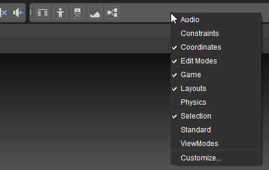
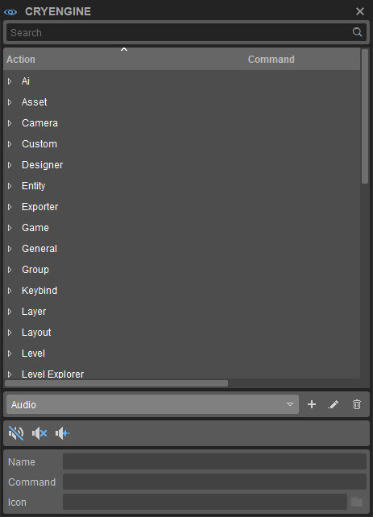
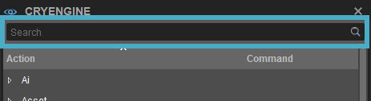
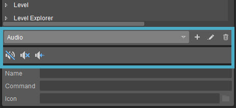
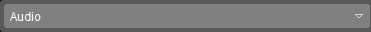
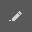
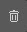
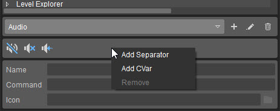
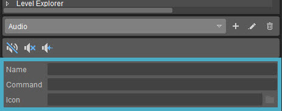
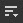

Обзор
Панели инструментов можно настроить в соответствии с вашими потребностями. Существуют стандартные предустановленные панели инструментов, но вы также можете создавать и настраивать свои собственные панели инструментов.
Редактор Sandbox поставляется с ограниченным количеством предустановленных панелей инструментов. Их можно найти, зайдя на Редактор -> Панели инструментов папка в папке вашего Engine.
NOTE: AppData — это скрытая папка. Проверьте здесь как отобразить скрытые папки.
Любые новые или измененные панели инструментов будут сохраняться в этой папке «Панели инструментов». Когда вы редактируете одну из стандартных панелей инструментов, входящих в состав Редактора, отредактированная версия также будет сохранена здесь. Если вы когда-нибудь удалите эту отредактированную версию, панель инструментов вернется к стандартной панели инструментов, поставляемой с редактором.
Отображение и скрытие предустановленных панелей инструментов
При первом открытии редактора Sandbox отображаются не все предустановленные панели инструментов. Щелчком правой кнопки мыши по области панели инструментов открывается контекстное меню, в котором можно показать и скрыть несколько предустановленных панелей инструментов:

Настройка панелей инструментов
Настроить опция в контекстном меню открывает настройку панели инструментов окно, которое позволяет настраивать существующие панели инструментов и создавать собственные панели инструментов с нуля:

Панель поиска
Вверху вы найдете строку поиска:

Эту панель можно использовать для фильтрации действий в окне ниже. Например, набрав дисплей отфильтрует Отображение циклаИнформация действие, которое позволяет переключаться между отображением различных объемов отладочной информации в правом верхнем углу области просмотра.
Затем вы можете перетащить действие по вашему выбору на предварительный просмотр панели инструментов (см. ниже), чтобы добавить его на панель инструментов.
Раздел редактирования панели инструментов
Под списком действий находится раздел редактирования панели инструментов:

В этом разделе вы можете переключаться между существующими панелями инструментов, добавлять новые панели инструментов и удалять их. Вы также увидите предварительный просмотр панели инструментов со всеми кнопками, которые находятся на выбранной вами панели инструментов.
В этом разделе доступны следующие опции:
| Кнопка | Вариант | Описание |
|---|---|---|
 | Раскрывающееся меню панели инструментов | Позволяет отобразить предварительный просмотр существующих панелей инструментов, чтобы их можно было редактировать. |
| Создать новую панель инструментов | Позволяет создать новую панель инструментов. | |
 | Переименовать панель инструментов | Позволяет переименовать выбранную панель инструментов. |
 | Удалить панель инструментов | Удаляет панель инструментов, выбранную в раскрывающемся меню. |
Вы можете перетаскивать действия из верхней части окна в область предварительного просмотра внизу этого раздела. Например, под Общий действие Очистить выбор можно перетащить в область предварительного просмотра. Вы также можете щелкнуть правой кнопкой мыши функцию (после того, как она была выбрана в раскрывающемся меню), а затем выбрать Добавить.
В предварительном просмотре панели инструментов вы можете перемещать кнопки по своему усмотрению — просто перетащите кнопку в нужное место.
Щелчок правой кнопкой мыши по области предварительного просмотра панели инструментов откроет контекстное меню:

С помощью этого меню вы можете выполнить следующие действия:
| Действие | Описание |
|---|---|
| Добавить разделитель | Добавляет разделительную линию между кнопками для удобства. |
| Добавить переменную | Добавляет кнопку, которой можно назначить переменную консоли. Нажмите кнопку, чтобы выбрать CVar и сопутствующее значение (см. раздел «Редактирование кнопок»). |
| Удалить | Удаляет выбранную кнопку панели инструментов или разделитель из предварительного просмотра. |
Раздел редактирования кнопок
В нижней части окна вы можете редактировать кнопки:

В зависимости от того, какую кнопку вы выбрали в предварительном просмотре панели инструментов, в нижней части этого окна появляются различные параметры:
| Вариант | Описание |
|---|---|
| Имя | Отображает название кнопки. |
| Команда | Отображает команду, назначенную кнопке. |
| CVar | Показывает CVar, назначенный кнопке CVar. Кнопка «Браузер» рядом с этим полем позволяет просматривать и выбирать CVar. |
| Значение | Позволяет присвоить значение CVar, например: при выборе r_displayinfo CVar, значение 0 позволит вам отключить отладочную информацию в правом верхнем углу области просмотра (но не включать ее снова!), введя значение 1 для того же CVar вы сможете включать и выключать его. |
| Значок | Позволяет выбрать значок для кнопок в предварительном просмотре панели инструментов из множества старых и новых значков. Нажмите кнопку Обзор кнопка рядом с полем для просмотра списка значков. |
Панели инструментов для конкретных инструментов
Многие инструменты Sandbox имеют собственные панели инструментов. На этих панелях инструментов есть несколько кнопок по умолчанию, но они так же настраиваемы, как и основная панель инструментов, и работают таким же образом.
Меню панелей инструментов
В пункте «Панели инструментов» в меню 
| Вариант | Описание | ||||||||||
|---|---|---|---|---|---|---|---|---|---|---|---|
| Настроить | Открывает окно настройки панели инструментов (см. выше), позволяя пользователям создавать новые панели инструментов и/или настраивать их, добавляя кнопки, специфичные для инструмента, в котором находится панель инструментов. Большинство опций, доступных для размещения на панели инструментов, также являются опциями в меню. | ||||||||||
| Блокировка панелей инструментов | Если этот параметр отключен, положения панелей инструментов и разделителей внутри инструмента можно изменять путем перетаскивания, а также можно добавлять разделители. | ||||||||||
| Проставки | Следующие параметры позволяют пользователям использовать разделители при позиционировании панелей инструментов.
Проставки Опции меню доступны только тогда, когда Панели инструментов → Заблокировать панели инструментов отключен. | ||||||||||
| Панели инструментов | Перечисляет все стандартные и пользовательские панели инструментов, созданные для соответствующего инструмента, что позволяет вам выбрать, какую панель инструментов вы хотите скрыть или отобразить. |
Если у инструмента есть панель инструментов, будь то панель по умолчанию или пользовательская, приведенные выше параметры также доступны при щелчке правой кнопкой мыши в области панели инструментов (только если панель инструментов уже отображается).